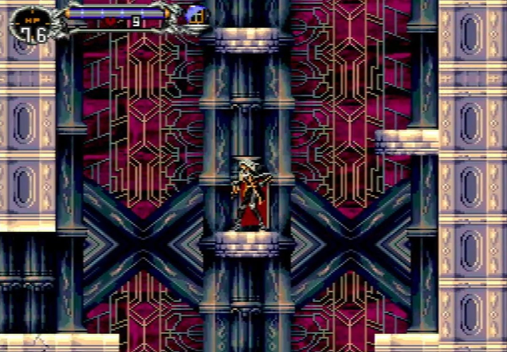
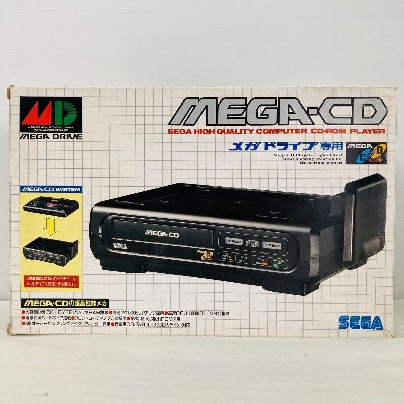
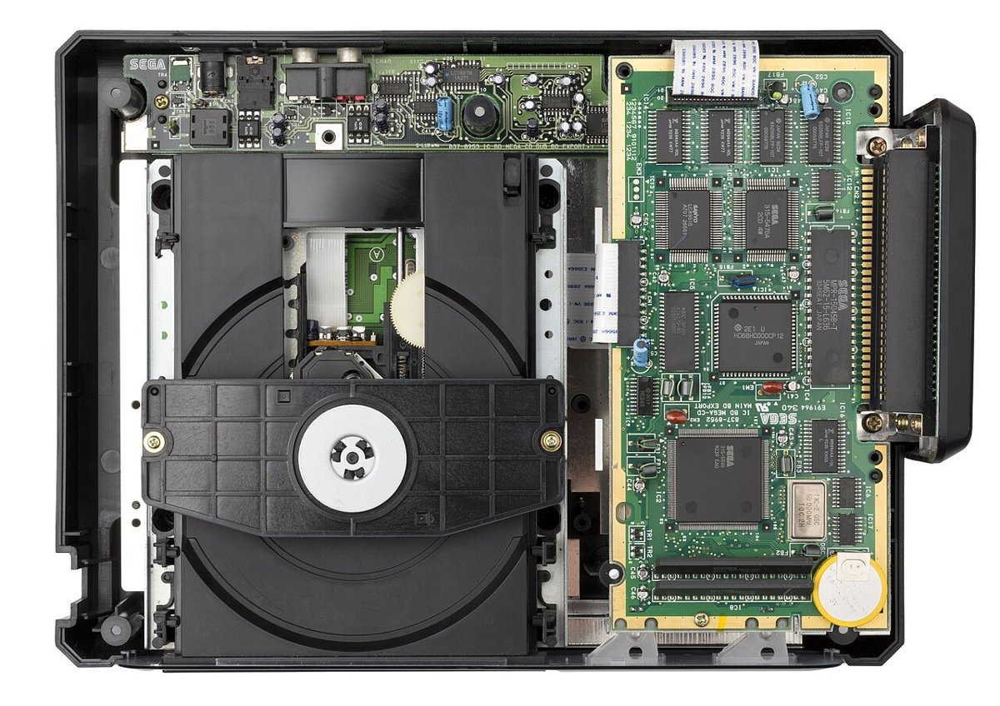

Day 1 · October 17–18, 2026
Day 1: from a PlayStation disc to Alucard walking on a Mega CD
So, which console?
My first question that night, at 11 p.m. on October 17, was about the Mega Drive. Now that someone had fully decompiled Symphony of the Night, could it be ported?
The answer was no. Without its videos, voice clips and streamed music, the game still weighs about 46 MB. A Mega Drive cartridge doesn't come close, not without cutting the game to pieces.


A word about Pigsy
Someone is already doing it the hard way. Pigsy, of Pigsy's Retro Game Dev Tutorials, is building his own Symphony of the Night for the Mega Drive, and it's a different project from mine: a new game written from scratch for the cartridge, split into stages. And it looks fantastic. Look at the backgrounds in his Alchemy Laboratory. Look at that Royal Chapel staircase, with a Bone Pillar breathing fire down at Alucard.


My project wanted something else: the castle itself. Every room connected, the inverted castle, the equipment, the familiars. That meant a bigger machine.
I also want a port with a few things the original never got. Remember the menu Igarashi had no time to finish? To me, finishing that design means extra care for everything that lives inside the menu: customizing your familiars, customizing the menu itself.
As for the balance between fidelity and change, the rule is simple. This is a port first, and it should look and play the way you remember it. But I couldn't resist hiding a few Easter eggs as a tribute to Sega and to the Mega CD itself. Those are for a later post.
So, Mega CD. Same video chip as the Mega Drive, but with a CD drive, a second processor and extra memory. And the original game is already split into pieces that load one area at a time, which is exactly how a CD system wants to work.

Eleven minutes after the first question, I asked where to start. Half an hour later, Claude Code was installed. Then it refused to start.
PS C:\Users\pagan\desktop\SOTN CD\Castlevania - Symphony of the Night> claude
claude : The term 'claude' is not recognized as the name of a cmdlet,
function, script file, or operable program.A promising beginning.
The next evening I was frustrated. I had spent hours on it and had nothing playable. On my Mega Man X3 port, X was controllable almost right away. So I moved the work into a regular Claude chat and kept going from there.
By 9:30 p.m. the disc booted on a Mega CD emulator, loaded an image from the CD, played an audio track, and then did the thing I actually cared about: Alucard, running the original game code, walking down a real Castle Entrance hallway. Real sprites, original collision, working stairs. Not long after, zombies rose out of the floor, walked at him and died to his bare fists.
The trick: two processors, two jobs
The Mega Drive's main processor runs at about 7.67 MHz. The PlayStation's runs at about 34 MHz. Asking the first one to run the second one's game and also draw the screen is not a plan.
The Mega CD adds a second processor, at 12.5 MHz. So the port splits the work. The second processor runs the game: Alucard, enemies, collision. The main one only draws what it's told. They trade notes once per frame through a shared block of memory. The price is one frame of delay between the game deciding something and the screen showing it.


My verdict at 8:40 p.m., after trying the controls: "Movement and physics are great, keep going." (Translated from Portuguese.)
The number
12 commits on day one. Two phases of the original plan closed, and the third already moving.
Next on the log, a detour: what AI can't do in this port. After that, day 2: candles, explosions, a HUD, and the castle music pulled straight from the original disc.